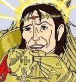

Warhammer 40000
 De: La Frikipedia, la enciclopedia extremadamente seria.
De: La Frikipedia, la enciclopedia extremadamente seria.
 El Emperador de la Humanidad aprueba este artículo.
Todo el cuento gira alrededor del Imperio del Hombre. Este Imperio fue creado por el Emperador de la Humanidad, que algunos dicen que puede vencer a Goku aunque, a diferencia de éste, no puede volar, pero tiene poderes psíquicos que dejarían epiléptico al profesor X, e incluso a un Wombat. Desafortunadamente el tío se dejó dar una paliza por uno de sus generales, Horus, a quien se le subieron los humos a la cabeza porque las Fuerzas del Mal le ofrecieron un chalet de playa en el planeta Vegeta con barcos y putas. Luego, como el Emperador ve que Horus está corrompido, y que si no lo mata los de Games Workshop no harían mas figuritas, lo liquida de un solo golpe, al mas puro estilo de Caballeros del Zodiaco, es decir, que permite que le zurre a base de bien antes de darle el golpe mortal. Así los de GW tienen negocio para años. Y después del combate, el Emperador ya no daba más de sí, y estaba hecho una mierda, así que le metieron en conserva, al estilo cúpula con forma de huevo en donde Darth Vader se pone su casco, donde se ha pasado los últimos 10000 años, enchufado al Counter Strike, al Mésenller , al Dawn of War y al canal porno.
En la actualidad los humanos viven por toda la galaxia y están hasta los cojones de luchar contra aliens, traidores, orkos y demás gentuza del espacio sideral.
Juego de estrategia
Es ciencia ficción pura y dura (como la de antes), pero básicamente consiste en sacar las tripas del rival por el ano jugar deportivamente en batallas de estrategia y pintar miniaturas hasta quedarte sin dinero en la cuenta del banco (y qué juego de miniaturas no, gilipollas). El caso es que se elige entre un variado número de ejércitos, todos copiados de hechos históricos o la mitología, para organizar batallas que entretienen las tardes de domingo de Frikis y jubilados.
Se usan dados, plantillas raras con formas fálicas y muchos trastos de escenografía; estos últimos son opcionales, porque valen un riñón y parte del huevo izquierdo (los oficiales de James Gursop) pero si eres mañoso y tienes cartones y algo de corcho todo puede ser.
Defensores del Imperio de la Humanidad, que según parece incluye a todo el Imperio de Star Wars, la base de mando de Stargate, todos los mundos visitados por la tripulación del Enterprise, la galaxia del Spore, la Tierra y los estudios de Blizzard. A pesar de cubrir un espacio tan grande, cada marine cuenta como mil hombres, así que no hay problema. (Mentira, hay pocos marines y la mitad se fueron de fiesta con Horus, así que ahora mismo las están pasando canutas)
Capítulos de Marines
(Hay muchos, aquí se describen algunos de los más importantes.)
Son como familias o clanes, a saber:
- Ultrapitufos: Son azules y siguen las reglas con un celo y una determinación que dan asco. Son sosos y normalillos, sin nada de especial pero sin nada malo tampoco (excepto que se rumorea que no hay que darles la espalda... sí, pensad mal...por mí deberían cambiar su nombre a "Ultramaricas").
- Lobos Siderales: Los vikingos de Erik se extraviaron y recorrieron el Camino Recto que lleva a Valinor, pero se desviaron y terminaron en un planeta llamado Fenris, donde siempre hace mal tiempo, nieva y hay bestias de espanto. Los Lobos Siderales presentan colmillos y propensión a las peleas, la buena birra y el hidromiel. Además se ofenden por nada y te guardan rencor muchos años. Son unos roñas y su jefe es un tal Lobezno. Su rito de iniciación es el mas divertido de todos: te emborrachan y luego te dejan en pelotas en la otra punta del planeta sin mas defensa que un tenedor contra bichos gigantescos, y te dicen: "Hala majo, vuelve a base", mientras ellos se piran en su transporte Rhino que a ver quién coño lo tumba.
- Los Ángeles Sangrientos: Eran los más guapos, los más buenos y los más santos hasta que quedaron traumatizados cuando su jefe, Sanguinius (esos de GW son gente muy original), fue asesinado por Horus. Su grito les dejó medio chalaos y ahora de vez en cuando se les va la olla y les entran unas ganas de matar que mejor no estar en medio. En cuanto a su aspecto, son todos rubios, guapos y altos, y además parecen vampiros. Su rito de iniciación consiste en una transfusión de sangre de Sanguinius, así que no hay ningún Testigo de Jehová en el capítulo.
- Los Ángeles Oscuros sufrieron una herejía. Cuando el Emperador organizó un gran botellón, el jefe de estos marines, llamdo Lionel Johnson, oriundo de Nottingham, dejó en Taliban, su planeta, a su amigote Lex Luthor para que lo vigilara mientras él se iba de fiesta. A Luthor no le gustó y le dijo: "Y una mierda. ¡Aquí o follamos todos o matamos a la puta!", y se pelearon, y como eran tan fuertes se cargaron el planeta Taliban, y Johnson murió (o eso dicen...) y Luthor se fue a la Tierra, a organizar una entidad terrorista musulmana y a luchar contra Superman, que se cree que es una encarnación del Emperador que por fin ha logrado volar.
- Los Templarios Negros están chalados y son fundamentalistas y radicales de su religión. Quieren quemar por herejes a todos los que se les ponen delante, o destrozarlos a espadazos, a ser posible. No les molan las otras razas de la galaxia, por lo que les han puesto a todos una medalla nazi secreta en el guebo izquierdo (digoo... derecho). Los del Imperio, siempre tan prulalistas.
- Los Cicatrices Blancas: Su jefe era el primo mongol de Conan, son una especie de bárbaros del futuro que sienten una gran necesidad de atropellar a todo lo que se mueva con sus motos.
- Puños imperiales: Éstos prefirieron quedarse en la Tierra; se ve que no les va eso de viajar por el espacio y prefirieron quedarse en casita con el Emperador. Son de color amarillo para que el enemigo les vea bien y no falle, y de esa manera morir por el Emperador, al que quieren tanto que da asco.
- Salamandras: Se caracterizan por ser todos negros y pirómanos, se les da bien hacer armas y les tienen tirria a los Guerreros del Hierro porque les copian todas las invenciones que fabrican.
- Manos de Hierro: Su jefe estaba mal de la cabeza y se creía Hulk; cuando era pequeño rompió una montaña de un cabezazo y prefería luchar sin armas, porque los puños se le recubrieron de una roña necrona que los hacía indestructibles. También le gustaba fabricar artefactos, y enseñó esa habilidad al capítulo, así que ahora son los fabricantes de juguetes más importantes de la galaxia, más incluso que el Toys'R'us.
- Guardia del Cuervo: Para pertenecer a este capítulo tienes que ser emo. Van todos de negro, tienen tendencias suicidas y algunos de ellos mutaron debido a una guarrería del Caos que echaron en la comida unos espías de la Legión Alfa.
El Astra Militarum
También hay unos pringados que son humanos sin mutar ni modificar, armados con "rifles láser", que es el nombre comercial de las linternas del futuro (también sirven para calentar en invierno), y con una armadura que parece hecha de plástico del "Todo a 100", pero como son muchos y con los cojones cuadrados (se piensa que son de Bilbao) no suelen tener problemas. Se llaman la Guardia imperial.Ya ves qué nombre, algunos que creíamos que las guardias eran de poquitos... Tienen unos tanques de la Segunda Guerra Mundial equipados con láseres y cañones del ejército de los Estados Unidos, y les robaron a los Star Wars varios AT-ST, aquellos vehículos bípedos que eran derribados por los Ewoks (subraza débil de la familia del Wombat) por troncos y pedradas. Y, por si pierden el valor y se cagan antes de atacar, les vigila de cerca un cabrón llamado Comisario, que dejó la serie en la que trabajaba y ahora se encarga de llevar a cabo una ejecución sumaria de vez en cuando para enseñar a los valientes soldados la dirección a seguir (no es coña, en las reglas viene bien especificado). Las funciones de un guardia imperial raso son las siguientes:
- Servir como blanco para la nueva munición de los marines
- Servir de alimento a los tiránidos
- Servir para satisfacer Cualquier necesidad de los Orkos (ya sea violencia o...)
- Servir como saco de boxeo para Khorne.
- No tocar las enormes tetas de las hermanas de batalla y servirles como blanco. (también)
- Ganar yerba para su amado emperador.
Su estrategia se basa en mandar 10 trillones de gilipollas a una muerte segura mientras sus tanques bombardean sin cesar el campo de batalla hasta reducirlo a un enorme cráter. Parece un despilfarro de tropas, pero como hay humanos de sobra a los comandantes se la suda.
También hay otros tipos de carne de cañón, como los plagios de bolcheviques que han tomado vodka y ginebra hasta reventar, que sólo los usan para que cuando se los coman el alien coja un pedal impresionante y que los camaradas del tal Iván (todos se llaman así) aprovechen e intenten matar con sus cócteles molotov al alien borracho.
No hay que olvidar a los queridos rambos de las junglas que se especializan en la lucha en la jungla (vietnamita o vaginal) a los cuales acaban enviando a parar una incursión orka al desierto de los monegros.
Luego están los talibanes especializados en la lucha de guerrillas, unos colgaos que viven en un planeta desértico en mitad de la nada. Una vez descubrieron un pendiente de Sauron enterrado bajo la arena y se montó tal pifostio que hubo que llamar a la Inquisición para que lo enterrase otra vez y parasen de salir demonios.
Tampoco olvidemos a los gilipollas que visten de colores chillones para que les disparen, y así malgastar munición en ellos para que cuando vengan los verdaderos soldados puedan vencer con facilidad.
La Inquisición
Sin olvidarnos de la bien intencionada Inquisición, dividida en 3 Ordos que son todo amor y comprensión (menuda rima).
- Ordo Malleus: Los de la orden del martillo son los tíos mas guays del Imperio, los caballeros grises, con armaduras barrocas, palos muy grandes con pinchos, y demás. Por alguna absurda razón atraen a los demonios como las moscas a la mierda (o al revés, qué más da), y como son tan guays son cuatro gatos. Los inquisidores de esta orden acaban muertos o vendidos a los poderes oscuros (quien le dice que no a un chaletito). El máximo exponente de la orden es un tal Díaz Torquemada (GW rebosa originalidad de nuevo) un tío que tiene un mazo muy grande y un reloj, piensa que todo el mundo es un hereje y lo demuestra antes de que su reloj dé las doce (momento en el cual enciende la hoguera y quema al reo por pura frustración).
- Ordo Hereticus: Estos tíos son unos cachondos, les encanta torturar a la gente, y se hacen acompañar de unas monjas armadas con tetas y metralletas (otra rima, estoy que me salgo) que tienen apariciones marianas y hacen milagros. Tambien tienen bastantes sadomasoquistas entre sus filas y llevan el órgano de la capilla montado en un tanque y con misiles en los tubos, se ve que no tenían presupuesto para comprar silos de misiles normales.
- Ordo Xenos: una amable y encantadora organización que se encarga de matar y juzgar a todo alienígena por el crimen de no ser humano y a los humanos que se asocian con ellos (se cree que descienden de los templarios negros, el Ku Klux Klan y el nacional socialismo). Los jodíos tienen su propio capítulo de marines, aunque nadie sabe cómo lo pagaron.
Tiránidos
Son los primos cercanos, pero con mas colorines y brazos, de los Aliens, y de los que Blizzard se copió para hacer a los Zergs.
Los controla un tipo que se llama la Mente Enjambre, que muchos creen que es Cthulhu o la supermente. Lo más destacable de ellos es que llevan a cabo la maravillosa acción desinteresada de regular la población de la galaxia a base de comerse planetas enteros como si fuesen canapés. Son unos cabrones tanto vivos como muertos, ya que su sangre y saliva son ácidas. (no acostumbran a ir al dentista)
Hay quien dice que la supermente es uno de los Dioses C'tan (los terminators) con un subidón de esteroides, anfetas y LSD.
Eldars
Tenemos a los eldars, que son como los elfos pero... nada, son como los elfos (pero esparcidos por el espacio y con naves), cambias arcos por armas que tiran cristalitos homosexuales que solo sirven para joder a algún guardia imperial.
Son los culpables de que todo vaya mal en la galaxia, porque con sus orgías hicieron que surgiera Slaanesh, el dios gay maraka, señor del exceso, los transexuales, etc. que fomenta todo tipo de sadomasoquismo, fechorías y porno pedofílico, necrofílico, zoofílico y demoniofílico (¿eso existe?) además de otras filias igualmente obscenas, asquerosas y aberrantes que le parecen de lo mejor que hay. Ahora, sus planetas de origen han sido destruidos, por tontos y por mariquitas (sobre todo por maricas), y viven en enormes naves espaciales de hueso raro y cristal rosa, y allí se dan por donde la espalda pierde el nombre mientras compran por internet pañuelos de lunares y bolas de cristal para adivinar el futuro y huevonadas raras por el estilo, e intentan defenderse de los tiránidos por robots hechos con las cenizas y huesos de sus difuntos.
Eldars Oscuros
Los Eldars tienen unos primos malvados y sadomasoquistas, los Eldars Oscuros, que gustan de las guarrerías, el porno duro, los cueros, el fetichismo, la música heavy descarnada y Marilyn Manson, que es uno de los líderes de la cábala más poderosa de su sociedad; son unos asquerosos depravados que disfrutan metiéndole "algo"(no me obliguéis a decirlo) a sus esclavos por el culo. Viven en una ciudad llamada Gomorra, encerrada dentro de un bolsillo dentro de una telaraña. No es broma. Son algo así como las piratas de la tele, vienen, te esclavizan y te ponen vídeos asquerosos para que vomites durante años hasta que te dejan morirte. Si no te mueres al final te sueltan... o te violan y luego te sueltan... O no te sueltan.
Orkos y gretchins
También tenemos a estos amorfos, que no han cambiado mucho salvo que ahora van en "cacharros" con metralletas, además de que ahora son los Orkos, con K y no con C. A algunos les gustan los bugas y el tunning y se han visto "The Fast and the Furious" tantas veces que han montado el clan de los "locos por la velocidad", que se dedican a darse de leches con sus compadres en bugas descuajeringados al más puro estilo Ben Hur o Twisted Metal.
La forma de nacer de un orko es de lo más raro: nacen de algas subterráneas y emergen a la tierra ya feos y maduros... Aunque nacen así, tienen necesidades como las de todos (usted entiende) pero al no haber "hembras" en su sociedad...
El Caos
Y la gran currada de la Games Workshop, el Caos, que son demonios y Marines Espaciales pervertidos (es decir, iluminados podridos) por las promesas de los Dioses Oscuros y que han sufrido cambios (muy chungos y con pinchos). Son malos, deformes y feos, y se dividen en varias Legiones:
- Legión Negra: Son los regulares. Pese al nombre, no hay un solo negro entre ellos. Hay millones de ellos, y por muchos que mates, siempre llegan más. Son bastante sosos (negros con algún adorno amarillo) y como son unos indecisos, en lugar de adorar a un dios concreto y ganar así ventajas (pero también desventajas) han decidido tomar la opción comodín y adorarles a todos.
- Los Mil Hijos son fantasmas e incorpóreos, pero viven encerrados en armaduras pseudoegicpias. Su líder, el promiscuo Magnus, se emborrachó y se fue de putas, y como nadie tenía condones y la cuestión era darle al tema, pues todas preñadas. Además allí le robaron un ojo por el comercio de órganos y se ha quedado cíclope. Ahora se dedica a copiar a su hermano mayor, Sauron, y vive en lo alto de una torre en un planeta perdido en el Ojete del Terror, en forma de ojo gigante.
- Los Bersérkers de Khorne o Devoradores de Mundos, son gente parecida a los alemanes, igual de blancos y más brutos. Les va la sangre y les pone hacer masacres del calibre mil. Van de rojo y oro y siempre portan hachas que usan para más que partir leña. Su líder era tan basto que ahora es un demonio con todas las letras.
- Los Marines de Plaga son gente bastante asquerosa. Están medio podríos y enfermos de todo. Algunos sólo tienen un catarro, pero hacen falta pocos años para que se conviertan en laboratorios farmacéuticos ambulantes. El tema del sexo es para ellos tabú, ya que la mayoría o se le ha caído el miembro o no lo tiene para puñetas. A estos también les gusta matar, pero contaminando cosas y viendo cómo se pudren. Sus aficiones son arrancarse costras y cultivar hongos, furúnculos y demás estructuras de pus diversas, que, a falta de maceta o placa de petri, cultivan en su piel, que por unos granos de más no se va a morir nadie. (Al menos, ellos no)
- Los Portadores de la Palabra, son unos fanáticos del calibre de los templarios negros, o incluso más. Al Emperador no le hacia ninguna gracia que en vez de matar alienígenas se pusieran a rezar, pero al Caos eso de que fuesen unos santurrones no le importaba una mierda. Ahora son gótico-chungos como el resto, pero tienen curas que adoran al diablo, demonios y peña que hace orgías satánicas en los chaletitos que les han dado.
- Los Amos de la Noche. Cuando los hijos de p... digo del Emperador y su primarca Coran Cruz (clon de Batman), fueron abandonados, a uno de ellos le tocó ir a un planeta donde no veían la luz del sol. Esto marcó su personalidad, ya que se volvió Hikikomori y un poco emo. Tras conocer la obra de Tim Burton, finalmente encontró el significado de su vida. Acabaría con la corrupción de su planeta (que estaba en manos de Julian muñoz III), matando a los chorizos desde las sombras, como un ninja. Sus tropas se caracterizan por
esconderse tras la cobertura como cobardes aprovechar la cobertura en su beneficio y por dar sustos a sus enemigos.
- Los Guerreros de Hierro: Expertos en PENETRAR (malpensados) por la puerta de atrás todas las fortalezas con las que se topan, para ello utilizan cañones que lanzan camiones bomba llenos de gente llena de bombas a los muros.
- Los Marines Ruidosos o Hijos del Emperador. Estos son discípulos de Slaanesh, el hermano pequeño de la familia, que es un pervertido sadomasoquista. Como es el menor y nadie le hacía caso, creó la música heavy para molestar y llamar la atención. Sus Marines Ruidosos comenzaron como un grupo de heavy metal con estética punk. Al principio eran cuatro, pero cuando uno de ellos, llamado Fabius Bilis, se interesó por los potingues, la clonación de caracoles y los brebajes, dejó el grupo, y muchos otros pidieron ocupar su lugar. Ahora el grupo consta de miles de componentes y han logrado conseguir varios discos de platino. Incluso tienen dos Emmy's en su haber.
- Hay también unos impresentables horrendos que se hacen llamar Demonios del Caos. Cada uno sirve a uno de los cuatro dioses del Caos diferentes: Khorne (tiene cuernos y problemas de autocontrol), Tzeentch (le van las pastillas de colorines y los mejunjes radiactivos), Nurgle (contrajo SIDA hace milenios y desde entonces colecciona enfermedades) y Slaanesh (es el más pervertido de todos y le va el látex y el rollo sadomasoquista)
- Para terminar tenemos a la
carne de cañón Guardia Imperial Traidora (valientes hijosdelagranputa rebeldes sin causa). Esta panda de desarrapados es grande (es necesario recordar los trillones de gilipollas que hay en la galaxia). Son igual de retrasados que la Guardia Imperial estándar pero con pinchos, más mala leche y más tasa de mortalidad (a los Dioses Ojcuros les importan una puta mierda). Sirven para todo: te hacen un chalet como mano de obra esclava, sirven de cobayas de laboratorio o incluso de batidos de proteínas para los Grandes Demonios.
Los Necrones
Liderados por Terminator, son robots que sirven a un misterioso dios vampiro: el C´tan .
Están vestidos con cintas alrededor del cuerpo y batamantas, y son unos bichos bastante tocapelotas: son lentos, hacen ruidos de los 80 y para matarlos hace falta tiempo y esfuerzo (están hechos de metales raros que se regeneran, kriptonita y duralex)
Se buscan la vida como chatarreros y como "cosechadores" para sus líderes, empeñados en alimentarse de zumos energéticos con almas de seres vivos y viagra.
Como no podría ser de otra manera, tienen trastos supertecnológicos monocromo (les gusta el plata), que son chachis para escamochar a cualquier bicho viviente y hacer orfebrería.
Entre los distintos tipos tenemos:
- Las puñeterísimas arañas, que se comen necrones muertos para parirlos otra vez.
- Los Parias: son humanos a los que les han hecho comer mierdecillas necronas hasta que se convierten en robots.
- Monolitos: Se ve que les sobraba metal y decidieron construir sus tanques con forma de boñiga enorme. No tiene sentido que sean tan grandes, ya que sus soldados no viajan dentro del tanque sino en otra subdimensión paralela en el orto de su dios bufón.
- Escarabajos canópticos: Especie endémica del planeta de los Transformers; los necrones hicieron una visita a sus colegas los Decepticons y éstos se los contagiaron. Desde entonces no se los pueden quitar de encima.
- Destructores: Ni siquiera los robots cojos se libran de luchar, a ellos los enchufan a un cachivache flotante que funciona a base de gasolina barata y secadores de pelo del "todo a cien", les dan un rifle un poco más grande que al resto para que les haga más ilusión ir a la guerra y los mandan a morir sin ningún tipo de compasión.
- Espectros: Son los más pringados de todos, se dedican a recoger la basura del resto, reparar los vehículos y arreglar el servidor necrón cuando da error 404 o pantallazo azul.
Como están muertos se aburren como ostras, pero no pueden quejarse ni hacer huelga, así que se dedican a seguir las órdenes de sus líderes y masacrar a toda pobre criatura que se les ponga por delante.
Tau
Tienen un imperio en ascensión con capital en Tatooine. En realidad son japoneses metidos en conserva que se escaparon de sus celdas y se fueron al quinto pino; allí les creció un tercer ojo con el que ven a las chicas sin ropa ni nada encima (a los chicos no, que por algo son supertecnológicos) y se volvieron azules, aunque algunos sostienen la hipótesis de que esto último viene dado por el vinagre de la conserva. El caso es que siguen teniendo pasión por los robots tipo Mazinger Z y las armas de confeti, y como son pequeños, flojos y se mueren de un soplo de viento (prueba más de que son japoneses extraviados) llevan a la batalla armaduras mega-apocalípticas de la muerte que lanzan rayos y chispas como cuando uno pega a los Power Rangers. Su líder no tiene rostro o nombre conocido, aunque cabe la posibilidad de que sea Takeshi Kitano, hombre de mundo, que decidió pasar las vacaciones en Benidorm y se perdió por el camino.
Sitios de interés
Existen muchos sitios donde poder ampliar conocimientos, reunirse para jugar e intercambiar ideas, además de la web de Games Workshop. He aquí uno de ellos:
DeathMatch Cáceres
Autor(es):
- Caraacnénerdi
- Khazike Khashondo
- AlemanH
- Naitsabes
- Dark temptation
- Masterarcanum
- Kevrochi
- Harry El del Pote
- Shas`O Kais
- Gororo
Frikipedia 2005-2016, Licencia
GFDL 1.2 - Extraído por FrikiLeaks